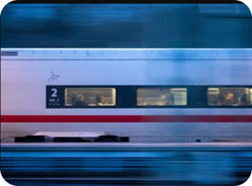
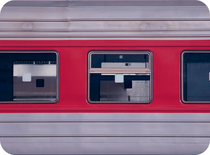
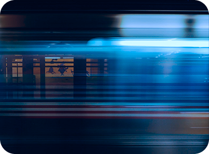

Торжественное открытие выставки, посвященной страхам перед будущим и их преодолению через искусство

Уникальная возможность пообщаться с Иваном Петровым, чьи работы исследуют тему движения вперед.

Последний день работы выставки. Не упустите шанс увидеть вдохновляющие работы.
Вдохновляющие работы, которые помогут вам преодолеть страх перед неизвестностью и начать действовать.
Тематика поезда символизирует неуклонное движение вперед, к новым горизонтам и возможностям.
Успешные художники демонстрируют, что творчество и самовыражение не знают границ и страхов.
Погрузитесь в атмосферу будущего, где инновации и прогресс открывают захватывающие перспективы.
Посмотрите, как смелость меняет мир. Эти цифры – доказательство того, что пробовать стоит.
«Я безумно боялась, что ошибусь с выбором профессии. Что творчество — это несерьезно, надо идти на юриста, как мама говорит. А на выставке увидела работы художников и их истории — они тоже сомневались, но все равно занимаются любимым делом. Вышла и твердо решила: поступаю в творческий. Спасибо за смелость!»
«Наконец-то галерея, где вместо скучного осмотра — живой диалог. Ушла с новыми мыслями и полезными контактами в телефоне. Студентам творческих вузов здесь самое место: это идеальная среда для нетворкинга и профессионального роста. Очень рекомендую!»
Поезд символизирует путь, прогресс и неизбежность движения к новым горизонтам. Он напоминает, что каждая остановка — это лишь часть большого путешествия.
"Станция Будущее" — это выставка, посвященная преодолению страхов перед неизвестностью. Поезд здесь — символ движения вперёд и постоянного развития.
Через истории успеха художников, выставка показывает, что ошибки — это ступени к мастерству. Не бойтесь пробовать новое, ведь именно так рождаются шедевры.
Выставка будет интересна всем, кто стремится к саморазвитию и ищет вдохновение для новых свершений. Особенно тем, кто стоит на пороге важных перемен.
Посетители получат заряд мотивации, избавятся от страха перед будущим и поймут, что ошибки — это ценный опыт на пути к успеху.